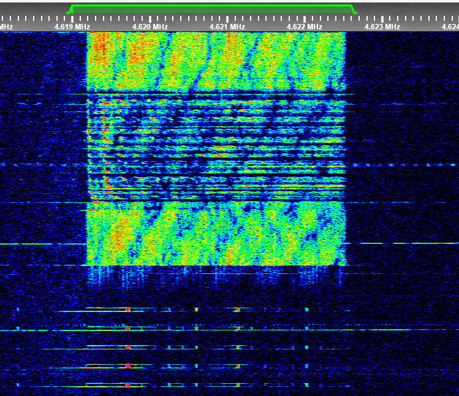

Recipient calls: Oblava12, Barkhta19, Narval92, etc.
Signabroam ID: S4619
| April | May - June | |||
|---|---|---|---|---|
| Time | Day | Night | Day | Night |
| Frequency | 6878 kHz | 4619 kHz | 7491 kHz | 5045 kHz |
| Shift UTC | 2250z/2300z | 0950z/1000z | ??? | 1150z/1200z |
The Station have 2 scheduled test counts at 0200z and 1400z UTC, the caller is Pikhta26 (april), and Taras2 (may), else the station transmit monolith format messages with Recipient callsigns.
The current marker of this station is a 800Hz pip and a transmitter noise + 50 Hz hum when the marker is off to keep the Frequency busy.
After each frequency shift, the station use a 800Hz beep during around 13 minutes and then enable the Pip marker.
The marker was also heard on S9062, but it is unknown if it is related to S9062 or not.
Audio Sample:
Waterfall Image: 
Waterfall Image from a test count:

Voice Message:
Transcription: Oblava12 25569 LOVKOST' 5421 6362
All media files above are from To5no.
Test count (female):
Transcription: Ya Pikhta26, 1 2 3 4 5 6 7 8 9 10, Priyom.